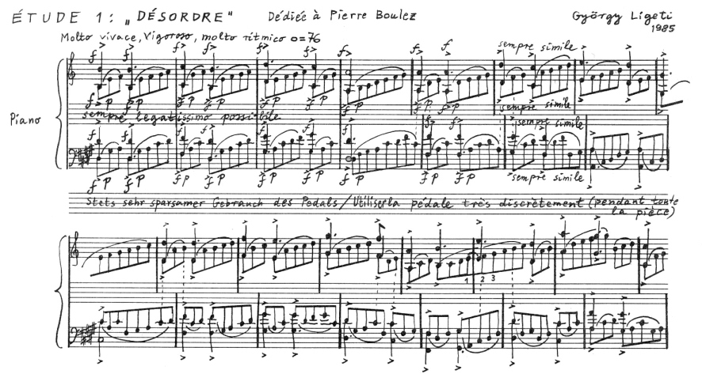

Ligeti: “Désordre”¶
>>> import abjad
>>> from abjad.demos import ligeti
This example demonstrates the power of exploiting redundancy to model musical structure. The piece that concerns us here is Ligeti’s “Désordre” (1986): the first piano etude from Book I. Specifically, we will focus on modeling the first section of the piece:
The redundancy is immediately evident in the repeating pattern found in both staves. The pattern is hierarchical. At the smallest level we have a cell:
There are two of these cells per measure. Notice that the cells are strictly contained within the measure: no cell crosses a barline. So, the next level in the hierarchy is the measure. Notice that time signatures change and that these changes occur independently for each staff. Thus, the staff is the next level in the hierarchy. Finally there’s the piano staff, which is composed of the right hand staff and the left hand staff.
In what follows we will model this structure bottom to top: cell, measure, staff, piano staff, score.
The cell¶
Observe the following characteristic of the cell:
1. It is composed of two layers: the top one which is an octave “chord” and the bottom one which is a straight eighth note run.
2. The total duration of the cell can vary, and is always the sum of the eight note runs.
3. The eight note runs are always stem down while the octave “chord” is always stem up.
4. The eight note runs are always beamed together and slurred, and the first two notes always have the dynamic markings ‘f’ ‘p’.
The two “layers” of the cell we will model with two Voices inside a simultaneous Container. The top Voice will hold the octave “chord” while the lower Voice will hold the eighth note run. First the eighth notes:
>>> pitches = [1, 2, 3]
>>> maker = abjad.NoteMaker()
>>> notes = maker(pitches, [(1, 8)])
>>> abjad.beam(notes)
>>> abjad.slur(notes)
>>> abjad.attach(abjad.Dynamic("f"), notes[0])
>>> abjad.attach(abjad.Dynamic("p"), notes[1])
>>> voice_lower = abjad.Voice(notes)
>>> voice_lower.name = "rh_lower"
>>> command = abjad.LilyPondLiteral(r"\voiceTwo")
>>> leaf = abjad.inspect(voice_lower).leaf(0)
>>> abjad.attach(command, leaf)
>>> abjad.show(voice_lower)
The notes belonging to the eighth note run are first beamed and slurred. Then
we add the dynamics to the first two notes, and finally we put them inside
a Voice. After naming the voice we number it 2 so that the stems of the
notes point down.
Now we construct the octave:
>>> import math
>>> n = int(math.ceil(len(pitches) / 2.0))
>>> chord = abjad.Chord([pitches[0], pitches[0] + 12], (n, 8))
>>> articulation = abjad.Articulation(">")
>>> abjad.attach(articulation, chord)
>>> voice_higher = abjad.Voice([chord])
>>> voice_higher.name = "rh_higher"
>>> command = abjad.LilyPondLiteral(r"\voiceOne")
>>> abjad.attach(command, voice_higher)
>>> abjad.show(voice_higher)
The duration of the chord is half the duration of the running eighth notes if the duration of the running notes is divisible by two. Otherwise the duration of the chord is the next integer greater than this half. We add the articulation marking and finally ad the Chord to a Voice, to which we set the number to 1, forcing the stem to always point up.
Finally we combine the two voices in a simultaneous container which results in a complete cell:
>>> voices = [voice_lower, voice_higher]
>>> container = abjad.Container(voices, simultaneous=True)
>>> staff = abjad.Staff([container])
>>> abjad.show(staff)
Because this cell appears over and over again, we want to reuse this code to generate any number of these cells. We here encapsulate it in a function that will take only a list of pitches.
def make_desordre_cell(pitches):
"""
Makes a Désordre cell.
"""
notes = [abjad.Note(pitch, (1, 8)) for pitch in pitches]
notes = abjad.Selection(notes)
abjad.beam(notes)
abjad.slur(notes)
abjad.attach(abjad.Dynamic("f"), notes[0])
abjad.attach(abjad.Dynamic("p"), notes[1])
# make the lower voice
lower_voice = abjad.Voice(notes)
lower_voice.name = "RH_Lower_Voice"
command = abjad.LilyPondLiteral(r"\voiceTwo")
abjad.attach(command, lower_voice)
n = int(math.ceil(len(pitches) / 2.0))
chord = abjad.Chord([pitches[0], pitches[0] + 12], (n, 8))
abjad.attach(abjad.Articulation(">"), chord)
# make the upper voice
upper_voice = abjad.Voice([chord])
upper_voice.name = "RH_Upper_Voice"
command = abjad.LilyPondLiteral(r"\voiceOne")
abjad.attach(command, upper_voice)
# combine them together
voices = [lower_voice, upper_voice]
container = abjad.Container(voices, simultaneous=True)
# make all 1/8 beats breakable
leaves = abjad.select(lower_voice).leaves()
for leaf in leaves[:-1]:
bar_line = abjad.BarLine("")
abjad.attach(bar_line, leaf)
return container
Now we can call this function to create any number of cells. That was actually the hardest part of reconstructing the opening of Ligeti’s “Désordre.” Because the repetition of patters occurs also at the level of measures and staves, we will now define functions to create these other higher level constructs.
The measure¶
We define a function to create a measure from a list of lists of numbers.
The function is very simple. It simply creates a DynamicMeasure and then
populates it with cells that are created internally with the function
previously defined. The function takes a list pitches which is actually a
list of lists of pitches (e.g., [[1,2,3], [2,3,4]]. The list of lists of
pitches is iterated to create each of the cells to be appended to the
DynamicMeasures. We could have defined the function to take ready made cells
directly, but we are building the hierarchy of functions so that we can pass
simple lists of lists of numbers to generate the full structure. To construct
a Ligeti measure we would call the function like so:
>>> pitches = [[0, 4, 7], [0, 4, 7, 9], [4, 7, 9, 11]]
>>> measure = ligeti.make_desordre_measure(pitches)
>>> staff = abjad.Staff([measure])
>>> abjad.show(staff)
The staff¶
Now we move up to the next level, the staff.
def make_desordre_measure(pitches) -> abjad.Container:
"""
Makes a measure composed of Désordre cells.
``pitches`` is a nested list of integers, like [[1, 2, 3], [2, 3, 4]].
"""
for sequence in pitches:
container = make_desordre_cell(sequence)
duration = abjad.inspect(container).duration()
duration = abjad.NonreducedFraction(duration)
time_signature = abjad.TimeSignature(duration)
leaf = abjad.inspect(container).leaf(0)
abjad.attach(time_signature, leaf)
return container
The function again takes a plain list as argument. The list must be a list of lists (for measures) of lists (for cells) of pitches. The function simply constructs the Ligeti measures internally by calling our previously defined function and puts them inside a Staff. As with measures, we can now create full measure sequences with this new function:
>>> pitches = [[[-1, 4, 5], [-1, 4, 5, 7, 9]], [[0, 7, 9], [-1, 4, 5, 7, 9]]]
>>> staff = ligeti.make_desordre_staff(pitches)
>>> abjad.show(staff)
The score¶
Finally a function that will generate the whole opening section of the piece “Désordre”:
def make_desordre_score(pitches):
"""
Makes Désordre score.
"""
assert len(pitches) == 2
staff_group = abjad.StaffGroup(lilypond_type="PianoStaff")
# build the music
for hand in pitches:
staff = make_desordre_staff(hand)
staff_group.append(staff)
# set clef and key signature to left hand staff
leaf = abjad.inspect(staff_group[1]).leaf(0)
abjad.attach(abjad.Clef("bass"), leaf)
key_signature = abjad.KeySignature("b", "major")
abjad.attach(key_signature, leaf)
# wrap the piano staff in a score
score = abjad.Score([staff_group])
return score
The function creates a piano staff, constructs staves with Ligeti music and then appends these to the empty piano staff. Finally it sets the clef and key signature of the lower staff to match the original score. The argument of the function is a list of length 2, depth 3. The first element in the list corresponds to the upper staff, the second to the lower staff.
The final result:
>>> upper = [
... [[-1, 4, 5], [-1, 4, 5, 7, 9]],
... [[0, 7, 9], [-1, 4, 5, 7, 9]],
... [[2, 4, 5, 7, 9], [0, 5, 7]],
... [[-3, -1, 0, 2, 4, 5, 7]],
... [[-3, 2, 4], [-3, 2, 4, 5, 7]],
... [[2, 5, 7], [-3, 9, 11, 12, 14]],
... [[4, 5, 7, 9, 11], [2, 4, 5]],
... [[-5, 4, 5, 7, 9, 11, 12]],
... [[2, 9, 11], [2, 9, 11, 12, 14]],
... ]
>>> lower = [
... [[-9, -4, -2], [-9, -4, -2, 1, 3]],
... [[-6, -2, 1], [-9, -4, -2, 1, 3]],
... [[-4, -2, 1, 3, 6], [-4, -2, 1]],
... [[-9, -6, -4, -2, 1, 3, 6, 1]],
... [[-6, -2, 1], [-6, -2, 1, 3, -2]],
... [[-4, 1, 3], [-6, 3, 6, -6, -4]],
... [[-14, -11, -9, -6, -4], [-14, -11, -9]],
... [[-11, -2, 1, -6, -4, -2, 1, 3]],
... [[-6, 1, 3], [-6, -4, -2, 1, 3]],
... ]
>>> score = ligeti.make_desordre_score([upper, lower])
>>> lilypond_file = ligeti.make_desordre_lilypond_file(score)
>>> abjad.show(lilypond_file)

Now that we have the redundant aspect of the piece compactly expressed and encapsulated, we can play around with it by changing the sequence of pitches.
In order for each staff to carry its own sequence of independent measure
changes, LilyPond requires some special setup prior to rendering. Specifically,
one must move the LilyPond Timing_translator out from the score context and
into the staff context. (You can refer to the LilyPond documentation on
Polymetric notation
to learn all about how this works. In this example we defined a custom function
to set up our LilyPond file automatically.